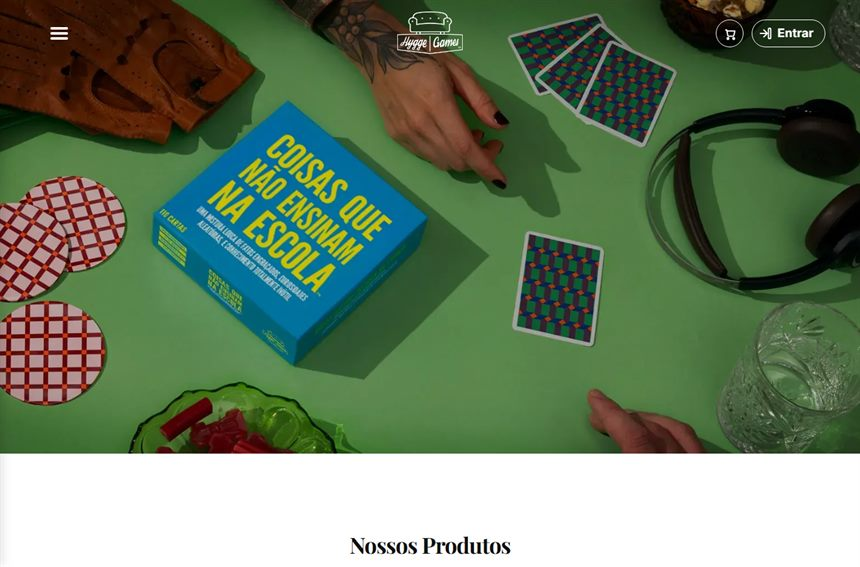
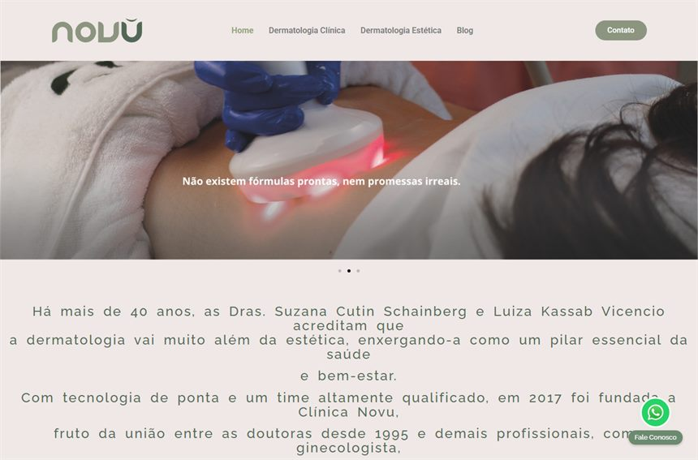
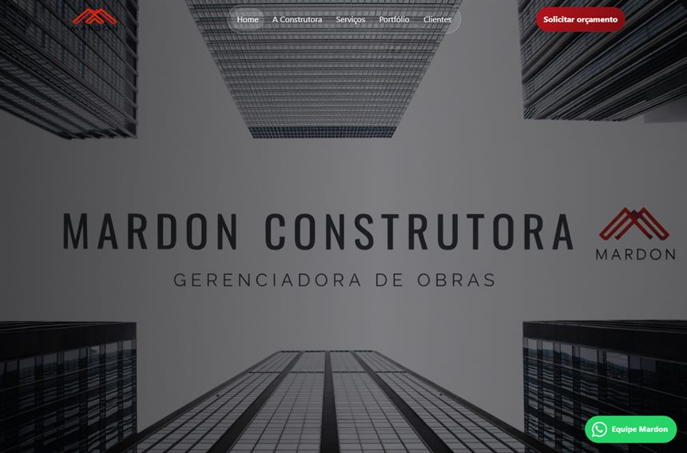

Landing pages e sites de alta conversão.
A BAM faz criação de landing page e sites pensados para uma única coisa: transformar visitante em cliente. Design persuasivo, copy de vendas e otimização de conversão (CRO) numa página rápida, mobile e pronta para captar leads.
Sites e landing pages que já criamos
Alguns projetos reais entregues pela BAM. Clique para visitar o site no ar.

Hygge Games — jogos (marca internacional)
Visitar site →Engenheiro Donato — engenharia e construção
Visitar site →
Clínica Novu — dermatologia clínica e estética
Visitar site →
Mardon — construtora e gerenciadora de obras
Visitar site →Uma landing page que converte não é um site bonito — é uma máquina de vendas
A maioria das páginas falha pelo mesmo motivo: foram feitas para impressionar, não para vender. Bonitas, lentas, cheias de informação e sem um caminho claro para a ação. O visitante chega, se perde e vai embora — e cada clique pago vira dinheiro jogado fora.
Na BAM, a criação de landing page começa pelo objetivo de negócio, não pelo layout. Antes de desenhar qualquer tela, definimos qual ação a página precisa gerar: um lead qualificado, um orçamento, uma venda, um agendamento. Cada bloco, cada palavra e cada botão existe para empurrar o visitante na direção dessa ação — sem ruído, sem distração.
É essa a diferença entre uma página de vendas e um folder digital: a primeira é construída sobre dados de comportamento e princípios de conversão; a segunda só ocupa espaço na internet.
Design persuasivo + copy de vendas: a dupla que faz o visitante agir
Conversão nasce do encontro entre o que a página diz e como ela mostra. Nossa copy de vendas é escrita para o seu cliente real: fala da dor, apresenta a solução, quebra objeções e conduz à decisão com chamadas para ação claras. Nada de texto genérico — cada frase tem função.
Do lado visual, o design persuasivo organiza a hierarquia da informação para que o olho siga exatamente o caminho que queremos: proposta de valor no topo, provas sociais no meio, oferta e formulário no ponto certo. Tipografia, contraste e espaçamento trabalham a favor da leitura e da confiança.
O resultado é uma página de vendas que não só explica o seu produto — ela convence. E convencer, no digital, é o que separa tráfego que custa de tráfego que paga.
Velocidade, mobile e integração: a conversão que acontece nos bastidores
Mais da metade do seu tráfego vem do celular, e cada segundo de carregamento a mais derruba a taxa de conversão. Por isso entregamos páginas leves, com código limpo e otimizadas para velocidade — porque uma landing page que demora a abrir perde a venda antes de mostrar a oferta.
Tudo é construído mobile-first e testado em diferentes telas, para que a experiência seja impecável no celular, no tablet e no desktop. E a captação não para no design: integramos a página a formulários, WhatsApp, e-mail e às ferramentas que você já usa, com rastreamento (pixels e tags) configurado para você medir cada lead e cada real investido.
CRO: a página não fica pronta, ela fica melhor a cada teste
Lançar a página é o começo, não o fim. Com otimização de conversão (CRO), acompanhamos o comportamento real dos visitantes — onde clicam, onde param, onde desistem — e usamos esses dados para ajustar títulos, ofertas, formulários e botões.
Esse ciclo de testes contínuos é o que faz a mesma quantidade de tráfego gerar mais leads e mais vendas ao longo do tempo. É marketing tratado como investimento: cada melhoria na taxa de conversão se transforma em faturamento sem aumentar o que você gasta em anúncios.
O que está incluso na sua landing page
- Estratégia de conversão: definição de objetivo, público e oferta da página
- Copy de vendas persuasiva escrita sob medida para o seu cliente
- Design persuasivo e responsivo (mobile-first) com identidade da sua marca
- Otimização de velocidade e código limpo para carregamento rápido
- Integração com formulários, WhatsApp e e-mail para captação de leads
- Configuração de rastreamento (pixel, tags e conversões) para medir resultados
- Testes de CRO e ajustes contínuos para aumentar a taxa de conversão
- Página pronta para receber tráfego pago e campanhas de captação de leads
Como funciona
Diagnóstico e estratégia
Entendemos o seu negócio, o público e a oferta. Definimos o objetivo da página e qual ação ela precisa gerar — lead, orçamento ou venda.
Copy e estrutura
Escrevemos a copy de vendas e montamos a arquitetura da página: proposta de valor, provas, objeções e chamadas para ação no lugar certo.
Design e desenvolvimento
Desenhamos o layout persuasivo e desenvolvemos a página leve, rápida e mobile-first, integrada a formulários, WhatsApp e ferramentas de medição.
Publicação e rastreamento
Colocamos a página no ar com pixels e tags configurados, para que cada visita e cada lead seja medido desde o primeiro dia.
CRO e otimização contínua
Analisamos o comportamento real dos visitantes e testamos melhorias para aumentar a taxa de conversão ao longo do tempo.
Perguntas frequentes
Quanto custa a criação de uma landing page?
O investimento varia conforme o objetivo, o número de páginas e o nível de integração e copy envolvidos. Na BAM, montamos um orçamento sob medida depois de um diagnóstico gratuito, sempre tratando a página como investimento que se paga em leads e vendas. Fale com a gente para receber uma proposta para o seu caso.
Qual a diferença entre landing page e site institucional?
Uma landing page é uma página única e focada em uma única ação — captar um lead, vender um produto ou gerar um orçamento — ideal para campanhas e tráfego pago. Um site para empresa é mais amplo, apresenta toda a sua operação e serve como base institucional. A BAM cria os dois, e ajuda você a decidir o que faz mais sentido para o seu momento.
Em quanto tempo a landing page fica pronta?
Depende do escopo, mas uma landing page de captação costuma ser entregue em poucos dias a algumas semanas, contando estratégia, copy, design e testes. Definimos o prazo exato no diagnóstico, sempre priorizando uma página que converte em vez de só uma página rápida de entregar.
A landing page funciona bem no celular?
Sim. Todas as páginas são construídas mobile-first e testadas em diferentes telas, porque a maior parte do tráfego vem do celular. Também otimizamos a velocidade de carregamento, já que páginas lentas perdem conversões antes mesmo de mostrar a oferta.
O que é CRO e por que ele aumenta as vendas?
CRO (otimização de conversão) é o processo de melhorar a porcentagem de visitantes que realizam a ação desejada na página. Com testes e análise de comportamento, ajustamos títulos, ofertas e formulários para que o mesmo tráfego gere mais leads e vendas — ou seja, mais resultado sem aumentar o gasto com anúncios.
Vocês integram a landing page com WhatsApp e formulários?
Sim. Conectamos a página a formulários, WhatsApp, e-mail e às ferramentas que você já usa, além de configurar o rastreamento de conversões. Assim, cada lead cai direto no seu canal de atendimento e você mede exatamente de onde vem cada contato.
Pronto para uma página que vende?
Receba um diagnóstico gratuito da sua estratégia de conversão e descubra como uma landing page de alta performance pode transformar o seu tráfego em clientes. Sem compromisso, com foco em resultado.
Falar com a BAM →